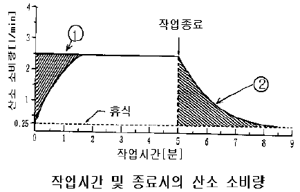
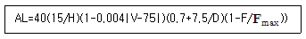
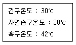
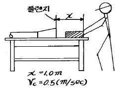
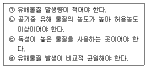
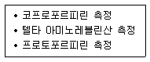

산업위생관리기사 (2004-08-08 기출문제)
1과목: 산업위생학개론
1. 어느 근로자의 1시간 작업에 소요되는 열량 400㎉이었다면, 작업대사율은 약 얼마인가? (단, 기초대사량: 60㎉/hr, 안정시 열량은 기초대사량의 1.2배임.)
- 4.7
- 5.5
- 7.9
- 10.8
(정답률: 알수없음)

2. 작업의 강도가 클수록 작업시간이 짧아지고 휴식시간이 길어지며 실동율이 떨어진다. 사이또의 공식을 사용하여 작업대사율(RMR)이 4일 때의 실동율은?
- 70%
- 65%
- 60%
- 55%
(정답률: 알수없음)
3. 심리학적 적성검사와 가장 거리가 먼 것은?
- 지능검사
- 인성검사
- 지각동작검사
- 감각기능검사
(정답률: 알수없음)
4. 인체내에서 체열의 생산이 제일 많은 기관은? (단, 안정시 1일 체열 생산량 기준)
- 골격근
- 간장
- 신장
- 심장
(정답률: 알수없음)
5. 다음중 전신피로의 원인에 대한 내용으로 틀린 것은?
- 산소공급부족
- 혈중포도당 농도의 저하
- 근육내 글리코겐량의 증가
- 작업강도의 증가
(정답률: 알수없음)
6. 인간공학에서의 정상작업역(正常作業域)에 대한 설명으로 가장 알맞는 것은?
- 상지(上肢)를 뻗쳐서 닿는 작업 범위
- 허리의 불편없이 적절히 조작할 수 있는 작업 범위
- 전박(前膊)과 손으로 조작할 수 있는 작업 범위
- 허리부근에 위치한 작업대에서 적절히 작업할 수 범위
(정답률: 84%)
7. 작업대사율에 의한 작업강도의 분류로서 맞는 것은?
- 경작업 : -2 ∼ 0
- 중등작업 : 1 ∼ 2
- 중작업 : 2 ∼ 4
- 강작업 : 4 ∼ 7
(정답률: 알수없음)
8. 재해율의 종류중 연천인율에 관한 설명으로 알맞지 않는 것은?
- 재적 근로자 1000인당 1년간에 발생하는 재해자수를 나타낸다.
- 산업재해의 발생상황을 총괄적으로 파악하는데 적합하다.
- 재해의 강도가 고려되지 않는다.
- 근로자의 근무시간이 다른 타 업종과 비교가 용이 하다.
(정답률: 알수없음)
9. 산업재해손실의 평가에 있어서 직접비와 간접비의 비(比) 어느 정도로 나타나는가? (단, 하인리히 방식 기준 (직접: 간접))
- 1 : 1
- 1 : 2
- 1 : 3
- 1 : 4
(정답률: 64%)
10. 국제기구 중 국민의 영양권장량 설정과 관계있는 기구는 어느 것인가?
- WHO
- ILO
- FAO
- IU
(정답률: 알수없음)
11. 산업위생에 관한 우리나라 최초의 법령인 근로기준법은 1953년에 공포되었고, 동 시행령은 1962년에 제정되었으나, 산업위생의 전반적인 내용을 규제하기는 미흡하여 새롭게 독립적인 산업안전보건법이 제정되었다. 제정된 연도는?
- 1981
- 1983
- 1985
- 1987
(정답률: 60%)
12. 산업안전보건법상 보건관리자의 직무와 가장 거리가 먼 것은?
- 물질안전보건자료의 게시 또는 비치
- 근로자의 건강관리, 보건교육 및 건강증진지도
- 보호구 점검, 지도, 유지 및 통계관리
- 직업성질환 발생의 원인조사 및 대책수립
(정답률: 알수없음)
13. 1950년 국제노동기구(ILO)와 세계보건기구(WHO) 공동위원회에서 발표한 산업보건의 정의에 포함되어 있지 않은 내용은?
- 근로자들의 육체적, 정신적 그리고 사회적 건강을 고도로 유지 증진
- 작업조건으로 인한 질병을 예방하고 건강에 유해한 취업을 방지
- 근로자들에게 유해한 작업환경을 측정하고 평가,분석
- 근로자를 생리적으로나 심리적으로 적합한 작업환경에 배치
(정답률: 알수없음)
14. 1911년 진동공구에 의한 수지(手指)의 Raynaud씨 증상을 보고한 사람은?
- Raynaud
- Tayler
- Rehn
- Loriga
(정답률: 알수없음)
15. 다음의 그림은 작업의 시작 및 종료시의 산소소비량을 나타낸 것이다. ①,②가 뜻하는 것은?

- ① 작업부채, ② 작업부채 보상
- ① 작업부채 보상, ② 작업부채
- ① 산소부채, ② 산소부채 보상
- ② 산소부채보상, ② 산소부채
(정답률: 60%)
16. 외국산업위생의 역사와 관련된 내용으로 연결이 틀린 것은?
- Hippocrates - 광산 납중독
- Galen - 구리광산의 산 증기의 위험성 보고
- Philippus Paracelsus - 직업병과 위생에 관한 팜플렛 발간
- Sir George Baker - 사이다 공장에서 납에 의한 복통 발표
(정답률: 알수없음)
17. 우리나라 A 유해물질의 노출기준은 100ppm이다. 잔업으로 인하여 작업시간이 8시간에서 10시간으로 늘었다면 이 기준치는 몇 ppm으로 보정해 주어야 하는가? (단, Brief와 Scala의 보정방법을 사용하시오)
- 60 ppm
- 70 ppm
- 80 ppm
- 90 ppm
(정답률: 알수없음)
18. 어떤 공장에서 500명의 근로자가 1년동안 작업하던 중 재해가 40건 발생하였다면 이 때 도수율은? (단, 1일 8시간, 연간 평균 근로일수 300일)
- 22.3
- 33.3
- 44.4
- 54.4
(정답률: 알수없음)
19. 근로자로부터 45㎝ 떨어진 물체(10㎏)를 바닥으로부터 150㎝ 들어올리는 작업을 1분에 5회씩 1일 8시간 수행할때, NIOSH의 감시기준(action limit, AL)은? (단, 물체의 손잡이는 양호하고 Fmax는 12회/min으로 가정한다.

- 약 16㎏
- 약 8㎏
- 약 4 ㎏
- 약 2㎏
(정답률: 알수없음)
20. 노동부장관이 고시하는 발암성 확인물질을 취급하는 근로자들의 건강진단결과서류를 사업주는 얼마동안 보존하여야 하는가?
- 5년
- 10년
- 20년
- 30년
(정답률: 알수없음)
2과목: 작업위생측정 및 평가
21. 어느 작업장에 Benzene의 농도를 측정한 결과 2ppm, 4ppm, 3ppm, 5.5ppm, 5ppm 을 얻었다. 이 측정값들의 기하평균은?
- 2.54
- 3.66
- 4.15
- 5.18
(정답률: 알수없음)
22. 여과매체인 여과지의 흡습성에 관한 설명으로 틀린 것은?
- 습기는 여과지의 정전기적인 특성을 감소시킨다.
- 흡습성이 높은 M CE여과지는 중량분석에 적합하지 않다.
- PVC여과지는 습도에 영향을 적게 받으며 전기적인 전하의 영향이 없어 채취효율이 우수하다.
- 유리섬유 여과지는 흡습성이 없지만 부서지기 쉬운 단점이 있어 중량분석에 사용하지 않는다.
(정답률: 알수없음)
23. 유도결합플라즈마 분석법에 관한 설명으로 틀린 것은?
- 비금속을 포함한 대부분의 금속을 ppb 수준까지 측정 할 수 있다.
- 화학물질의 의한 방해로 부터 거의 영향를 받지 않는다.
- 적은 시간에 많은 종류의 금속을 분석할 수 있다. 즉 한번의 시료를 주입하여 10-20초내에 30개 이상의 원소를 분석할 수 있다.
- 시료분해시 화합물의 바탕방출이 없어 분석의 정확도 및 정밀도가 높다.
(정답률: 알수없음)
24. 실리카겔관이 활성탄관에 비하여 가지고 있는 장점이 아닌 것은?
- 극성물질을 채취한 경우 물, 메탄올 등 다양한 용매로 쉽게 탈착한다.
- 추출액이 화학분석이나 기기분석에 방해물질로 작용하는 경우가 많지 않다.
- 매우 유독한 이황화탄소를 탈착용매로 사용하지 않는다.
- 수분을 잘 흡수한다.
(정답률: 알수없음)
25. 세 개의 소음원의 소음수준을 한 지점에서 각각 측정해보니 첫 번째 소음원만 가동될 때 88dB, 두 번째 소음원만 가동될 때 86dB, 세 번째 수음원만이 가동될 때 91dB이었다. 세 개의 소음원이 동시에 가동될 때 그 지점에서의 음압수준은?
- 91.6dB
- 93.6dB
- 95.4dB
- 100.2dB
(정답률: 40%)
26. 수동식 시료채취기의 표면에서 나타나는 결핍현상을 제거 하는데 필요한 가장 중요한 요소는 무엇인가?
- 일정한 온도의 유지
- 일정한 압력의 유지
- 최소한의 습도유지
- 최소한의 기류유지
(정답률: 44%)
27. 흡광광도기분석의 작동원리는 특정파장의 빛이 특정한 자유원자층을 통과하면서 선택적인 흡수가 일어나는 것을 이용하는 것이며 이 관계는 Beer-Lambert법칙을 따른다. 빛의 강도가 I0인 단색광이 어떤 시료용액을 통과할 때 그 빛의 50%가 흡수된 경우 흡광도는?
- 0.8
- 0.7
- 0.5
- 0.3
(정답률: 알수없음)
28. 누적소음노출량 측정기로 소음을 측정하는 경우에 기기 설정으로 적절한 것은? (단, 측정대상여부를 판단하기 위한 경우)
- Criteria:90dB, Exchange Rate:10dB, Threshold:80dB
- Criteria:80dB, Exchange Rate:10dB, Threshold:90dB
- Criteria:90dB, Exchange Rate:5dB, Threshold:80dB
- Criteria:80dB, Exchange Rate:5dB, Threshold:90dB
(정답률: 알수없음)
29. 온열조건을 평가하는데 습구흑구온도지수(WBGT)를 사용한다. 태양광이 있는 실외에서 측정결과가 다음과 같은 경우 습구흑구온도지수(WBGT)는?

- 30.3 ℃
- 31.0 ℃
- 32.2 ℃
- 33.5 ℃
(정답률: 알수없음)
30. 다음 유속 측정기기들 중에 유체가 윗쪽으로 흐름에 따라 float도 위로 올라가며 float와 관벽사이의 접촉면에서 발생되는 압력강하가 float를 충분히 지지해줄 때까지 올라간 float의 눈금을 읽어 측정하는 장비는?
- 오리피스미터(orifice meter)
- 벤츄리미터(venturi meter)
- 로타미터(rotameter)
- 유출노즐(flow nozzles)
(정답률: 알수없음)
31. 원통형 비누거품미터를 이용하여 공기시료채취기의 유량을 보정하고자 한다. 원통형 비누거품미터의 내경은 4㎝이고 거품막이 30㎝의 거리를 이동하는데 10초의 시간이 걸렸다. 이 공기시료채취기의 유량은?
- 약 1.4ℓ /min
- 약 1.7ℓ /min
- 약 2.0ℓ /min
- 약 2.3ℓ /min
(정답률: 55%)
32. 측정기구보정을 위한 2차표준기기에 해당되는 것은?
- Wet-test meter
- Soap bubble meter
- 'Frictionless' piston meter
- Pitot tube
(정답률: 65%)
33. 산에 쉽게 용해되므로 입자상 물질중의 금속을 채취하여 원자흡광법으로 분석하는데 적정한 여재는? (단, 산업위생에서 대부분이 사용하고 있는 여재 기준)
- 직경 45mm, 구멍의 크기 0.8㎛인 MCE 막여과지
- 직경 45mm, 구멍의 크기 0.2㎛인 MCE 막여과지
- 직경 37mm, 구멍의 크기 0.8㎛인 MCE 막여과지
- 직경 37mm, 구멍의 크기 0.2㎛인 MCE 막여과지
(정답률: 알수없음)
34. [단위작업장소에서 소음수준은 규정된 측정위치 및 지점에서 1일 작업시간동안 ( )시간이상 연속측정하거나 작업시간 ----- 측정하여야 한다] ( )안에 알맞는 내용은?
- 2
- 4
- 6
- 8
(정답률: 50%)
35. 어떤 작업장에서 하이볼륨 시료채취기( High volume sampler)를 1.1m3/분의 유속에서 1시간 30분간 작동시킨 후, 여과지(filter paper)에 채취된 납 성분을 전처리과 정을 거쳐 산(acid)과 증류수 용액 100㎖에 추출하였다. 이 용액의 15mL를 취하여 250mL 용기에 넣고 증류수를 더 하여 250mL가 되게하여 분석한 결과 9.80mg/L 이었다. 작업장 공기내의 납농도는 몇 ㎎/m3인가? (단, 납의 원자량은 207, 100% 추출된다고 가정한다.)
- 0.165
- 0.245
- 0.395
- 0.478
(정답률: 알수없음)
36. 액체포집방법에서 포집효율을 증가시키는 방법으로 가장 알맞는 것은?
- 채취속도를 증가시킨다.
- 시료를 냉각시킨다.
- 포집용액을 감소시킨다.
- 흡수액과 채취물질의 반응성을 줄인다.
(정답률: 알수없음)
37. 유량,측정시간,회수율 및 분석 등에 의한 오차가 각각 10, 5, 7 및 5% 였다. 만약 유량에 의한 오차를 5%로 개선시켰다면 개선후의 누적오차는?
- 8.4%
- 11.1%
- 12.7%
- 14.9%
(정답률: 알수없음)
38. 흡입성 입자상 물질(IPM)의 입경범위는? (단, 미국 ACGIH 정의 기준 )
- 0.5 - 5㎛
- 5 - 10㎛
- 0 - 100㎛
- 10 - 50㎛
(정답률: 50%)
39. 공기중에 오염원은 다르나 인체에 비슷한 영향을 주는 유해물질인 A는 5ppm(노출농도=10ppm), B는 20ppm(노출 농도=50ppm), C는 10ppm(노출농도 =20ppm)으로 오염되었다면 이 때의 작업장의 혼합물질의 노출농도는? (단, 상가작용 기준)
- 20 ppm
- 25 ppm
- 30 ppm
- 35 ppm
(정답률: 알수없음)
40. 원자흡광광도법에서 사용되는 불꽃으로 내화성산화물을 만들기 쉬운 원소분석에 적합한 조연성가스와 가연성가스의 조합으로 적합한 것은?
- 수소-공기
- 프로판-공기
- 아세틸렌-공기
- 아세틸렌-아산화질소
(정답률: 알수없음)
3과목: 작업환경관리대책
41. 2개의 집진장치를 직렬로 연결하였다. 집진효율 70%인 사이클론을 전처리장치로 사용하고 전기집진장치를 후처리 장치로 사용한다. 총집진효율이 98.5%라면, 전기집진장치의 집진효율은?
- 87%
- 91%
- 95%
- 99%
(정답률: 23%)
42. 송풍기의 풍량과 회전수의 관계중 맞는 것은?
- 풍량과 회전수는 비례한다.
- 풍량은 회전수의 제곱에 비례한다.
- 풍량은 회전수의 세제곱에 비례한다.
- 풍량과 회전수는 역비례한다.
(정답률: 알수없음)
43. 벤젠 1L 가 모두 증발하였다면 벤젠이 차지하는 부피는? (단, 벤젠의 비중은 0.88이고 분자량은 78, 21℃ 1기압)
- 176 L
- 272 L
- 325 L
- 414 L
(정답률: 알수없음)
44. 청력보호구의 차음효과를 높이고자 할 때의 유의 사항중 틀린 것은?
- 청력보호구는 머리모양이나 귓구멍에 잘 맞는 것을 사용하도록 한다.
- 청력보호구를 잘 고정시켜서 보호구 자체의 진동을 최소한도로 줄이도록 한다.
- 청력보호구는 기공이 있는 흡음재료로 만들도록 한다.
- 귀덮개 형식의 보호구는 머리카락이 길때와 안경테가 굵거나 잘 부착되지 않을때는 사용하지 않도록 한다.
(정답률: 70%)
45. 국소환기시설 전체의 압력손실이 250mmH2O이고, 송풍기의 총 공기량이 10,000m3/hr일 때 소요동력은? (단, 송풍기효율 80%, 안전인자 20% )
- 16.74kw
- 14.56kw
- 12.23kW
- 10.21kw
(정답률: 15%)
46. 방진재료로 사용하는 방진고무의 장점이 아닌 것은?
- 내후성, 내유성, 내약품성이 좋아 다양한 분야의 적용이 가능하다.
- 여러 가지 형태로 된 철물에 견고하게 부착할 수 있다.
- 설계자료가 잘 되어 있어서 용수철 정수를 광범위하게 선택할 수 있다.
- 고무의 내부마찰로 적당한 저항을 가지며, 공진시의 진폭도 지나치게 크지 않다.
(정답률: 알수없음)
47. 용접작업대에 그림과 같은 후드를 설치코저 한다. 개구면적이 0.15(m2)일 때 송풍량은 얼마인가?

- 약 50(m3/min)
- 약 100(m3/min)
- 약 150(m3/min)
- 약 200(m3/min)
(정답률: 알수없음)
48. 어떤 작업장에서 메틸알코올(비중 0.792, 분자량 32.04) 이 시간당 2.0 ℓ 증발되어 공기를 오염시키고 있다. 여유계수 K값은 6이고, 허용기준 TLV는 200 ppm이라면 이 작업장을 전체환기시키는데 요구되는 필요환기량은?
- 346 m3/min
- 595 m3/min
- 728 m3/min
- 1252 m3/min
(정답률: 알수없음)
49. 어떤 원형닥트에 난류가 흐르고 있다. 닥트의 직경을 1/2로 하면 직관부분의 압력손실은 몇 배로 되는가?
- 8배
- 16배
- 32배
- 64배
(정답률: 알수없음)
50. 원형 덕트내 흐르는 공기의 총 압력 손실에 관한 설명 중 알맞지 않는 것은?
- 총 압력 손실은 덕트의 길이에 비례
- 총 압력 손실은 덕트의 직경에 반비례
- 총 압력 손실은 유속의 제곱에 비례
- 총 압력 손실은 공기의 밀도에 반비례
(정답률: 40%)
51. 푸쉬-풀 후드에 관한 설명으로 틀린 것은?
- 도금조와 같이 폭이 넓은 경우에 사용하면 포집효율을 증가시키면서 필요유량을 감소시킬 수 있다.
- 공정에서 작업물체를 처리조에 넣거나 꺼내는 중에 공기막이 형성되어 오염물질 확산을 억제할 수 있다.
- 노즐로는 하나의 긴 슬롯, 구멍 뚫린 파이프 또는 개별노즐을 여러개 사용하는 방법이 있다.
- 노즐의 각도는 제트공기가 방해받지 않도록 하향 방향을 향하고 최대 20° 내를 유지하도록 한다.
(정답률: 알수없음)
52. 원심력 송풍기중 후향 날개형 송풍기에 관한 설명으로 틀린 것은?
- 터보 송풍기라고도 하며 전향 날개형 송풍기에 비해 효율이 좋다.
- 송풍량 증가에 따라 동력의 증가율이 높은 단점이 있다.
- 회전날개가 회전방향 반대편으로 경사지게 설계되어 있어 충분한 압력을 발생시킬 수 있다.
- 고농도 분진함유 공기를 이송시킬 경우, 집진기 후단에 설치해야 한다.
(정답률: 알수없음)
53. 국소배기 시설의 투자비용과 운전비를 적게하기 위한 필요조건으로 알맞은 것은?
- 필요송풍량 감소
- 제어속도 증가
- 후드개구면적 증가
- 발생원과의 원거리 유지
(정답률: 알수없음)
54. 20℃, 760mmH2O의 작업환경 상태에서 Toluene의 농도 30mg/m3는 몇 ppm인가? (단, Toluene 분자량: 92 )
- 5.26 ppm
- 7.83 ppm
- 8.93 ppm
- 9.24 ppm
(정답률: 64%)
55. 배기닥트로 흐르는 오염공기의 속도압이 2㎜H2O 이라면 닥트내 오염공기의 유속은? (단, 오염공기밀도 1.2kg/m3)
- 2.6 m/sec
- 4.3 m/sec
- 5.7 m/sec
- 7.1 m/sec
(정답률: 50%)
56. 직경이 38cm, 유효높이 5m의 원통형 백 필터를 사용하여 0.5m3/sec의 함진가스를 처리할때 여과속도는?
- 1.7 ㎝/sec
- 8.4 ㎝/sec
- 12.4 ㎝/sec
- 16.2 ㎝/sec
(정답률: 알수없음)
57. 작업환경의 관리원칙인 대치 중 물질의 변경에 따른 개선예로 가장 거리가 먼 것은?
- 염료합성원료: 벤지딘을 대신하여 디클로로벤지딘으로 대치
- 금속세척작업: 트리클로에틸렌을 대신하여 계면 활성제로 대치
- 세탁시 화재예방: 디클로로에탄을 대신하여 불화수소로 대치
- 분체입자를 큰 입자로 대치
(정답률: 알수없음)
58. 어떤 작업장의 음압수준이 90dB이고, 근로자는 귀덮개(NRR=17)를 착용하고 있다. 미국산업안전보건청 계산방법을 이용하여 차음효과와 근로자가 노출되는 음압수준은? (단, NRR(noise reduction rating): 차음평가수)
- 차음효과 5dB, 음압수준 85dB
- 차음효과 7dB, 음압수준 83dB
- 차음효과 9dB, 음압수준 81dB
- 차음효과 10dB, 음압수준 80dB
(정답률: 알수없음)
59. 관경이 200mm인 직관 속을 공기가 흐르고 있다. 공기의 동점성계수가 1.5 × 10-5m2/s이고, 레이놀즈수가 40,000이라면 풍량은?
- 4.24 m3/min
- 5.65 m3/min
- 6.52 m3/min
- 7.76 m3/min
(정답률: 90%)
60. 전체 환기시설을 설치하기 위하여 필요한 조건들이다. 알맞는 것으로만 짝지어진 것은?

- ㉠㉢
- ㉠㉣
- ㉡㉢
- ㉡㉣
(정답률: 알수없음)
4과목: 물리적유해인자관리
61. 0℃,1기압의 공기중에서 파장이 5m인 음의 주파수는?
- 33㎐
- 44㎐
- 55㎐
- 66㎐
(정답률: 알수없음)
62. 1000Hz 순음의 음의 세기레벨 40dB의 음의 크기를 나타 내는 것은?
- 1 phon
- 1 sone
- 1 rayls
- 1 SIL
(정답률: 알수없음)
63. 채광을 위한 창의 면적은 바닥면적의 몇 % 가 이상적인가?
- 5-10%
- 10-15%
- 15-20%
- 20-25%
(정답률: 알수없음)
64. 음향출력 0.1W를 발생하는 소형싸이렌의 음향파워레벨은 몇㏈인가?
- 90
- 100
- 110
- 120
(정답률: 65%)
65. 전리방사선이 아닌 것은?
- α 선
- 중성자
- 마이크로파
- X 선
(정답률: 알수없음)
66. 방사성 물질의 방사능 단위 즉 초당 3.71× 1010 개의 원자 붕괴가 일어나는 방사능물질의 양으로 정의 되는 것은?
- R
- rem
- Ci
- rad
(정답률: 55%)
67. 장시간의 고온 환경 폭로후에 오며 대량의 염분상실을 동반한 발한과다로 발생하는 고온 폭로 증상은?
- 열경련
- 열피로
- 열사병
- 열쇠약
(정답률: 알수없음)
68. 진동이 발생되는 작업장에서 근로자에게 폭로되는 양을 줄이기 위한 관리대책 중 적절하지 못한 항목은?
- 진동전파 경로를 차단한다.
- 공진을 확대시켜 진동을 최소화 한다.
- 작업시간의 단축 및 교대제를 실시한다.
- 완충물등 방진제를 사용한다.
(정답률: 알수없음)
69. 고압환경의 영향 중 2차적인 가압현상에 관한 설명으로 알맞지 않는 것은?
- 4기압 이상에서 공기중의 질소 가스는 마취 작용을 나타낸다.
- 질소가스 마취작용은 알코올 중독의 증상과 유사 하다고 할 수 있다.
- 산소의 분압이 2기압을 넘으면 산소중독증세가 나타난다.
- 산소중독은 폭로 중지후에도 근육경련, 환청등 휴유증이 장기간 계속된다.
(정답률: 알수없음)
70. 적외선의 생체작용과 가장 거리가 먼 것은?
- 화학적 색소 침착
- 초자공 백내장
- 눈의 각막 손상
- 뇌막 자극으로 경련을 동반한 열사병
(정답률: 알수없음)
71. 전자파의 정도를 나타내는 자속밀도의 단위인 G(Gauss) 와 T(Tesla)의 관계로 알맞는 것은?
- 1 T = 102 G
- 1 T = 103 G
- 1 T = 104 G
- 1 T = 1⑤ G
(정답률: 알수없음)
72. 음압 6N/m2의 음압도는 몇 dB인가?
- 90dB
- 100dB
- 110dB
- 120dB
(정답률: 알수없음)
73. 고온순화에 관한 설명으로 틀린 것은?
- 체표면에 있는 한선의 수가 증가한다
- 순화방법은 하루 100분씩 폭로하는 것이 가장 효과적이며 하루의 고온폭로 시간이 길다고 하여 고온순화가 빨리 이루어지는 것은 아니다.
- 간기능이 활성화되어 콜레스테롤과 콜레스테롤에스터의 비가 증가한다.
- 고온에 폭로된 지 12-14일에 거의 완성되는 것으로 알려져 있다.
(정답률: 알수없음)
74. 레이저(laser)에 감수성이 가장 큰 신체부위는?
- 대뇌
- 눈
- 갑상선
- 혈액
(정답률: 80%)
75. 하한주파수 500Hz, 상한주파수 1000Hz 범위의 중심주파수는? (단, 1/1 옥타브 밴드, 정비형 필터 기준)
- 702 Hz
- 707 Hz
- 754 Hz
- 782 Hz
(정답률: 알수없음)
76. 한냉폭로에 의한 신체적 장애에 관한 설명으로 알맞지 않는 것은?
- 동상:조직의 동결을 말하며 피부의 동결온도는 대략-1℃ 부근이다.
- 참호족:동결온도이하의 찬공기에 단기간의 접촉으로 급격한 동결이 발생하는 장애이다.
- 침수족은 부종,저림,가려움,심한통증등이 생기고 점차 물집이 생기고 피부조직이 괴사를 일으킨다.
- 전신체온강화는 장시간 한냉 노출로 인한 급성 중증장애이다.
(정답률: 알수없음)
77. 재질이 일정하지 않고 균일하지 않아 정확한 설계가 곤란하며 진동방지라기 보다는 고체음의 전파방지에 유익한 방진재료는?
- 방진고무
- Felt
- 코일스프링
- 코르크
(정답률: 60%)
78. [정상적인 공기중의 산소함유량은 21%이며 그 절대량 즉산소분압은 해면에 있어서는 ( )mmHg 이다.] ( )안에 알맞는 내용은?
- 280
- 210
- 190
- 160
(정답률: 알수없음)
79. 빛의 밝기 단위인 룩스(lux)의 정의로 가장 알맞는 것은?
- 1촉광의 광원으로부터 한 단위 입체각으로 나가는 광속의 밝기
- 지름이 1인치되는 촛불이 수평방향으로 비칠 때 밝기
- 1촉광의 빛이 1ft2에 비칠 때의 밝기
- 1m2의 평면에 1루멘의 빛이 비칠 때의 밝기
(정답률: 알수없음)
80. 공장내부에 기계 및 설비가 복잡하게 설치되어 있는 경우에 작업장 기계에 의한 흡음이 고려되지 않아 실제흡음 보다 과소평가되기 쉬운 흡음측정방법은?
- Sabin method
- Reverberation time method
- Sound power method
- Loss due to distance method
(정답률: 알수없음)
5과목: 산업독성학
81. 다음의 유기용제과 그 특이증상을 짝지은 것 중 알맞지 않는 것은?
- 벤젠-조혈장애
- 염화탄화수소-간장애
- 이황화탄소-중추신경 및 말초신경장애
- 메틸부틸케톤-시신경장애
(정답률: 알수없음)
82. 상온 상압에서 향긋한 냄새를 가진 무색 투명한 액체로 비점은 80.1℃이며 이 물질에 반복 폭로시 백혈구감소, 빈혈등을 일으키는 물질은?
- 아세톤
- 크실렌
- 톨루엔
- 벤젠
(정답률: 알수없음)
83. 유기용제 중 스티렌의 생체내 대사물로 측정되는 것으로 알맞는 것은?
- 요중 마뇨산
- 요중 만델린산
- 요중 메틸마뇨산
- 요중 메탄올
(정답률: 알수없음)
84. 무기성 분진에 의한 진폐증이 아닌 것은?
- 규폐증
- 용접공폐증
- 철폐증
- 면폐증
(정답률: 알수없음)
85. 진폐증을 유발시키는 분진이 석면분진과 같이 섬유상인 경우에 관한 설명으로 가장 알맞는 것은?
- 길이가 5㎛이하이고 너비가 1.5㎛보다 엷으면서 길이와 너비의 비가 3:1보다 큰 섬유가 유해하다.
- 길이가 5㎛이하이고 너비가 2.5㎛보다 엷으면서 길이와 너비의 비가 2:1보다 적은 섬유가 유해하다.
- 길이가 5㎛이상이고 너비가 1.5㎛보다 엷으면서 길이와 너비의 비가 3:1보다 큰 섬유가 유해하다.
- 길이가 5㎛이상이고 너비가 2.5㎛보다 엷으면서 길이와 너비의 비가 2:1보다 적은 섬유가 유해하다.
(정답률: 59%)
86. 다음은 메탄올(CH3OH)에 대한 설명이다. 틀린 것은?
- 메탄올은 공업용제로 사용되며 신경독성물질이다.
- 메탄올의 주요독성은 시각장해, 중추신경억제, 혼수상태를 야기한다.
- 메탄올은 호흡기 및 피부로 흡수된다.
- 메탄올의 대사 산물로서 망막조직에 손상을 주는 것은 포름산이다.
(정답률: 22%)
87. 이황화탄소에 관한 설명으로 틀린 것은?
- 냉각제, 금속세척, 황화수소제조에 흔히 사용된다.
- 휘발성이 매우 높은 무색 액체이다.
- 대부분 상기도를 통해서 체내에 흡수된다.
- 생물학적 폭로지표로는 TTCA검사가 이용된다.
(정답률: 알수없음)
88. 작업환경 중에서 부유하는 분진이 체내로 흡입되는 중요한 작용기전(작용메카니즘)과 가장 거리가 먼 것은?
- 충돌
- 침강
- 농축
- 확산
(정답률: 알수없음)
89. 물질중 뼈에 가장 많이 축적되는 것은?
- DDT
- 불소(F)
- PCB
- 벤젠(Benzene)
(정답률: 42%)
90. 공기중에 두가지 혼합물이 존재하며 상대적 독성수치가 2 + 3 = 5 로 나타날 때 두 물질간에 일어난 상호작용은?
- 상가작용
- 가승작용
- 상승작용
- 길항작용
(정답률: 알수없음)
91. 다음 열거된 석면 종류중 직업성 질환(폐암 또는 중피종)의 발생위험이 가장 높은 것은?
- 크리소타일
- 아모싸이트
- 크로시도라이트
- 악티노라이트
(정답률: 알수없음)
92. 다음 내용과 가장 관계가 깊은 것은?

- 비소
- 카드뮴
- 수은
- 납
(정답률: 알수없음)
93. 카드뮴에 관한 설명으로 가장 거리가 먼 것은?
- 카드뮴은 부드럽고 연성이 있는 금속으로 납광물이나 아연광물을 제련할 때 부산물로 얻어진다.
- 흡수된 카드뮴은 혈장단백질과 결합하여 최종적으로 간에 축적된다.
- 체내로 부터 카드뮴이 배설되는 것은 대단히 느리다.
- 카드뮴에 의한 급성노출 및 만성노출 후의 장기적인 속발증은 고환의 기능쇠퇴, 폐기종, 간손상등이다.
(정답률: 알수없음)
94. 혈액독성의 평가내용으로 알맞지 않는 것은?
- 혈구용적:정상치보다 높으면 탈수증과 다혈구증이 의심된다.
- 혈색소:정상치보다 높으면 간장질환, 관절염이 의심된다.
- 백혈구수:정상치보다 낮으면 재생 불량성 빈혈이 의심된다.
- 혈소판수:정상치보다 낮으면 골수기능저하가 의심된다.
(정답률: 37%)
95. 유병률(P)과 발생률(I)사이의 관계로 가장 알맞는 것은? (단, 유병률은 10%이하, 발생률과 평균이환기간(D)이 시간 경과에 따라 일정함)
- P = I / D
- P = I × D
- P = I / D2
- P = I × D2
(정답률: 42%)
96. 작업장 유해인자의 위해도평가를 위해 고려하여야 할 요인으로 가장 거리가 먼 것은?
- 시간적 빈도와 기간
- 공간적 분포
- 평가의 합리성
- 조직적 특성
(정답률: 알수없음)
97. 철강제조에서 직업성폭로가 가장 많고 합금, 용접봉의 용도를 가지며 계속적인 폭로로 전신의 근무력증,수전증, 파킨슨씨 증상을 초래하는 유해물질은?
- 산화마그네슘
- 망간
- 산화칼륨
- 카드뮴
(정답률: 알수없음)
98. 노말헥산은 체내 대사과정을 거쳐 물질로 배설된다. 노말헥산에 폭로된 근로자의 생물학적 폭로 지표로 이용되는데 대사 물질은?
- hippuric acid
- 2,5 - hexanedione
- hydroquinone
- 9 - hydroxyquinoline
(정답률: 알수없음)
99. 납중독을 확인하는데 이용되는 시험내용과 거리가 먼 것은?
- 혈중의 납
- 헴(Heme)의 대사
- 신경전달속도
- β - ALA 이동시험
(정답률: 30%)
100. 베릴륨 중독에 관한 설명과 가장 거리가 먼 것은?
- 염화물, 황화물, 불화물과 같은 용해성 베릴륨화합물은 급성중독을 일으킨다.
- 베릴륨의 만성중독은 Neighborhood cases라고도 불리운다.
- 치료는 BAL등 금속배설촉진제를 투여하며 피부병소는 BAL연고를 바른다.
- 예방을 위해 X선 찰영과 폐기능검사가 포함된 정기 건강검진이 필요하다.
(정답률: 알수없음)
근로자가 1시간 동안 작업을 하면서 소비한 열량은 400㎉이다. 이를 기초대사량과 비교하여 계산하면 다음과 같다.
안정시 열량 = 기초대사량 × 1.2 = 60 × 1.2 = 72 (㎉/hr)
작업대사율 = (소비한 열량 - 안정시 열량) ÷ 작업시간 = (400 - 72) ÷ 1 = 328 (㎉/hr)
따라서, 이 근로자의 작업대사율은 328 (㎉/hr)이다. 이 값을 기초대사량으로 나누면 다음과 같다.
작업대사율 ÷ 기초대사량 = 328 ÷ 60 ≈ 5.5
따라서, 정답은 "5.5"이다.